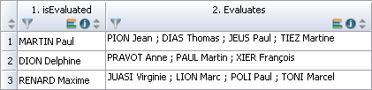
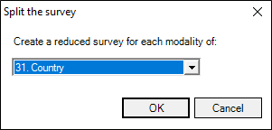

CHANGE STATISTICAL UNITS
Making a change in statistical unit involves grouping observations with the same identifier (key variable), or splitting the study into several sub-surveys or splitting the observations (for one part, this creates several observations for each original observation).
It is sometimes necessary to group together several observations concerning the same individual. This concept is frequently used in 360° analysis in the human resources field. The principle is the following: a person is evaluated on a certain number of professional competences by his superior and also by his colleagues. In addition, he or she may be asked to evaluate himself or herself. This type of study, once deployed in a company, creates a series of observations on a group of employees judged several times on the same criteria.
From this database, and for certain analyses, we will want to group together the evaluations of the same individual in order to work, for example, only on the average he has obtained on each skill, calculated on all the questionnaires concerning him (his superior, his colleagues). We will therefore move from the table of evaluations to the table of evaluated persons. To do this, we will change the statistical unit by grouping the observations.
Here is an example of the data collected in a Human Resources survey:

We can see that Paul MARTIN, for example, was evaluated 4 times: by his superior, by 2 collaborators, and by a pair. We can therefore see 4 lines in the spreadsheet. However, we would like to group these 4 evaluations into a single line: no longer reason at the level of each evaluation made, but at the level of the overall evaluation of this person (and this for all the people evaluated in the database). To do this we need to implement a change of statistical unit by grouping.
To do so:
-
Click on Regroup button from the Data tab.
-
Choose the treatment to apply for each variable (Ignore, Keep, Merge or Calculate).
In our example, the key variable corresponds to the evaluated persons (we want to group all the evaluations in one). We have chosen to keep all the data by merging them. Furthermore, we calculate the average of all the evaluations made for each evaluated individual.
-
Click onOK to validate your choice.

Another survey will be created: the grouping survey. You must save it and it will open automatically.
In the grouping survey, the following data is displayed in the spreadsheet:

We can see that we now have only one evaluation (one row in the spreadsheet) for MARTIN Paul for example. The column 'Evaluator' lists all the evaluators of this person. It is therefore now possible to carry out our analyses on each evaluated person (for example, starting from the average score that we have calculated).
Sometimes, on a single individual or a single household, several identical measurements will be made. For example, a consumer will be asked to evaluate a series of products on the same criteria. In a household, we will record identical information (age, sex, class, etc.) on several children. We will thus have a questionnaire with a first series of questions concerning baby products, then several parts (three in our example), where we ask the same questions, for other types of products.
If we want to obtain certain results such as the average number of children per household, the distribution of the different socio-professional categories or the geographical distribution of the families surveyed, the statistical unit will be the household.
However, if we then want to know which brands are most frequently purchased or the distribution of product types by household, we no longer reason at the household level but at the product level. It will therefore be necessary to modify the structure of the response base and to operate a "change of statistical unit".
To do so:
-
Click on the Split button from the Data tab.
-
Choose the method to be used to split your observations:
-
The sections: Split original records based on the parts of the questionnaire (these parts are on the same question list).
-
The values of the multiple question: Split the original records according to the number of responses to a multiple question.
-
The values of the numerical question: Split the original records according to the values of a numerical question.
EXAMPLE: In our example, we are going to break down the observations into sections: We want to think not by household but by product. So we select the sections to be treated (they have to be built in the same way).
-
-
(Optional) Check Ignore questions outside of these sections if you want to ignore questions in the unselected sections.
-
Click on Finish to validate your choices.
-
Save the survey (you will be asked if you want to open the created survey).


To divide a study into multiple sub-surveys, proceed as follows:
-
Click on the Divide button from the Data tab.
-
Choose the variable that will create a reduced survey for each of its modalities.
EXAMPLE:
In our example we aim to obtain a sub-survey for each modality of the Country variable; thus, we obtain a France survey, an Italy survey etc...
-
Click on OK.
-
Select the directory where the divided surveys will be saved.
-
Click on OK to validate and quit the assistant.